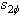
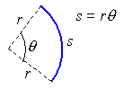

Purpose The purpose of this lab experiment is to perform a modified Rutherford scattering experiment using macroscopic objects.
Background In 1910 Sir Ernest Rutherford and his students conducted a famous experiment whereby the basic construction of the atom became evident. He applied what was then known about collisions with macroscopic objects to collisions at atomic dimensions, and proved that atoms must have a central, highly compact nucleus of positive charge surrounded by a cloud of negatively charged electrons. We will perform a modified Rutherford experiment in that it presents the general technique used to determine unknown properties of a scattering target.
Particles impacting the circular surface, however, scatter according to a precise mathematical relationship between their impact parameter, , and their scattering angle, . We will use a scattering apparatus to indirectly measure the radius of a plastic target. An air gun is used to discharge steel shot at the target, which is rigidly fixed in the center of large metal rim of radius as shown in Figure 3. By lining the metal rim with a carbon strip, the impact position of the scattered particles can be recorded and the scattering angle may be determined. The air gun can be set at various impact parameters by adjusting the travel screw shown in Figure 8.
From Figure 3 it can also be shown that the arclength  may be represented by
 where and are given in radians, and is the known radius of the metal rim enclosing the scattering apparatus. You should be able to convince yourself of this relationship if you recall the that the arclength,  ,
that subtends an angle,
,
of a circle of radius,
,
is given by the formula
. ,
that subtends an angle,
,
of a circle of radius,
,
is given by the formula
.
Therefore, if values for and can be deduced or indirectly measured, we can determine the value for . From Figure 3, we see that and are related by and Equation 1 then becomes
Using the trigonometric identity, , Equation 3 simplifies to
Thus a relationship between the target's radius, the impact parameter and the scattering angle is established for circular targets. During this experiment, keep in mind that like Rutherford before you, the dimensions of your target are to remain "invisible". That is, in this experiment you are not allowed to directly measure the target's diameter or radius! However, you do know, a priori, that the scattering target is exactly centered within the metal ring and you may use that fact to assist your investigation.
Objectives
Equipment and setup
Hints and Cautions
Online Assistance
Lab Report Template Each lab group should download the Lab Report Template and fill in the relevant information as you perform the experiment. Each person in the group should print-out the Questions section and answer them individually. Since each lab group will turn in an electronic copy of the lab report, be sure to rename the lab report template file. The naming convention is as follows:
For example the group at lab table #5 working on the Ideal Gas Law experiment would rename their template file as "5 Gas Law.doc".
Questions Each student should download the questions. Each person in the group should print out the questions and answer them individually. Discussing the questions as a group is acceptable, but each student is responsible for turning in answers that represent their own work, not the work of others.
Nudge Questions These Nudge Questions are to be answered by your group and checked by your TA as you do the lab. They should be answered in your lab notebook. Objective 1 Nudges
TA Notes
Data, Results and Graphs
Answers to Questions
Lab Manual
CUPOL Experiments
If you have a question or comment, send an e-mail to Lab Coordiantor: Jerry Hester
|
|||||||||||||||||||||||||||||||||||||||||||||||||||||||
|
|

Copyright © 2006. Clemson University. All Rights Reserved. Photo's courtesy Corel Draw. Last Modified on 01/27/2006 14:25:18 |